Blogs
- Jede Woche, Mittwochs: GLOBAL 2000 - Zu Fuß um die Welt
- Einmal im Monat derStandard.at/Panorama - Projekt Weltwanderung
Archiv
19. Oktober 2011
12. Oktober 2011
03. Oktober 2011 - Tag der Abreise von Wien
- PULS4 Austria News - Interview
- GLOBAL 2000 - Unsere Route
- derStandard.at/Panorama - Weltwanderer: Und dann waren sie weg
- GLOBAL 2000 - Zu Fuß um die Welt
02. Oktober 2011
Bilder
03. Oktober 2011 - Tag der Abreise
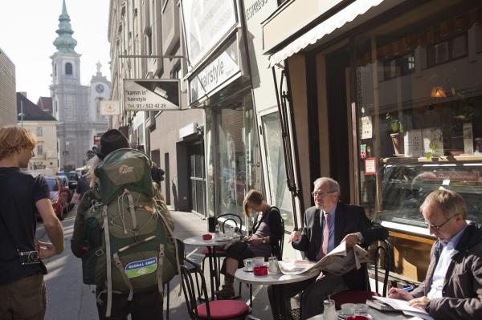
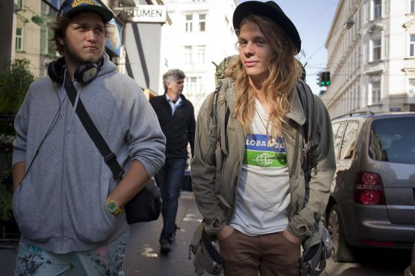
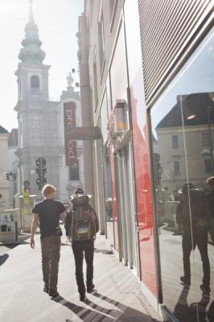
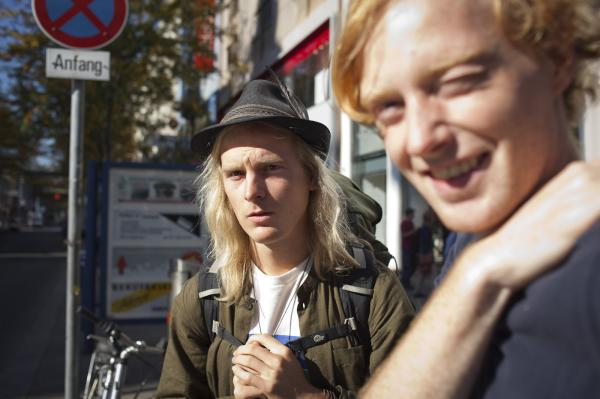
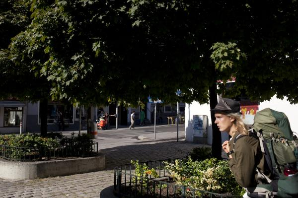
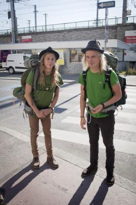
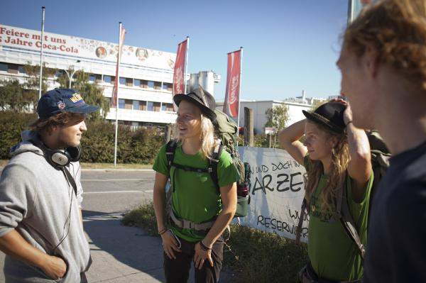
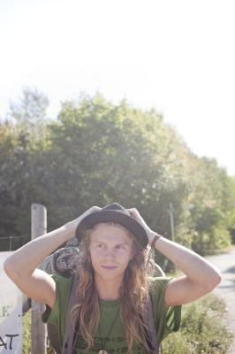
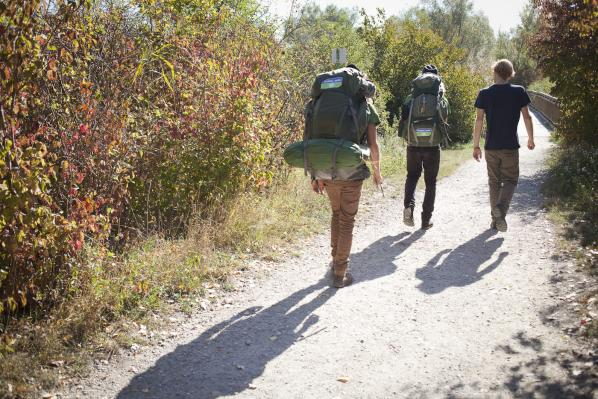
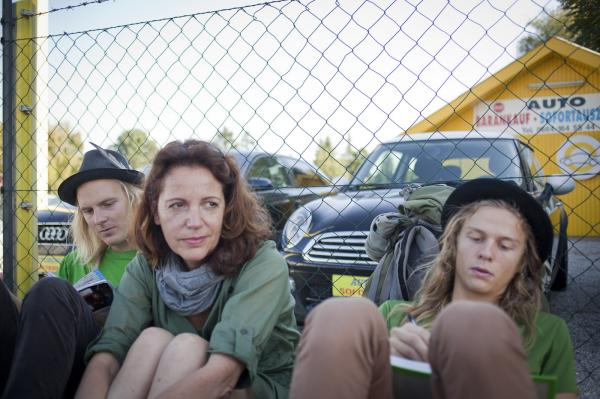
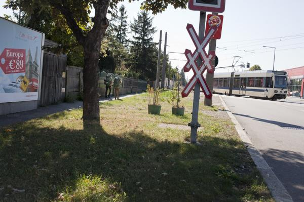
Presse
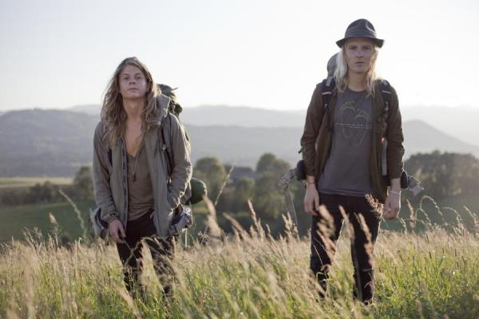
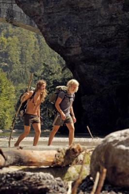
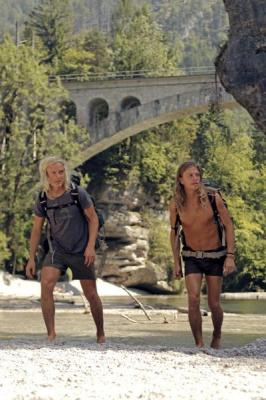
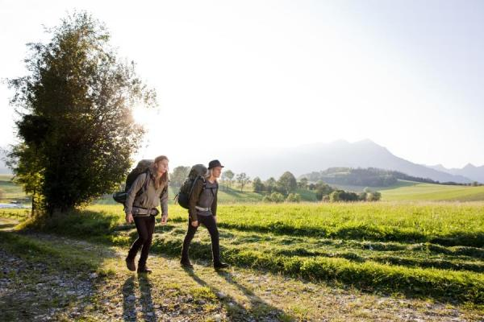
Impressum / Inhaltlich Verantwortlich:
Name: Thomas Fritz
EMail: fritztho_at_gmail_com
Ort: Wien
Name: Thomas Fritz
EMail: fritztho_at_gmail_com
Ort: Wien